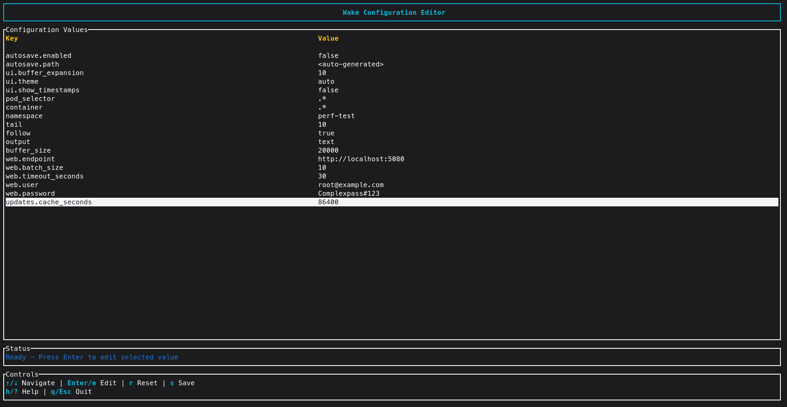

WAKE
Advanced Kubernetes Log Analysis & Diagnostics
Get Started in Seconds
Homebrew
brew install samba-rgb/wake/wake
Source
Click to expand ▼
git clone https://github.com/samba-rgb/wake.git
cd wake
cargo build --release
./target/release/wake --helpQuick Start Examples
Basic Usage
wakeFilter Logs
wake -i "error"Interactive UI
wake --uiAll Arguments
| Argument | Description | Default |
|---|---|---|
POD_SELECTOR | Pod selector regex (positional) | .* |
-c, --container <REGEX> | Container selector regex | .* |
-s, --sample <N> | Randomly sample up to N matching pods | all |
-L, --list-containers | List all containers in matched pods (no streaming) | - |
--all-containers | Show logs from all containers in pods | - |
-n, --namespace <NAME> | Kubernetes namespace | current context |
-A, --all-namespaces | Show logs from all namespaces | - |
-k, --kubeconfig <PATH> | Path to kubeconfig file | - |
-x, --context <NAME> | Kubernetes context to use | - |
-t, --tail <LINES> | Lines of logs to display from beginning | 10 |
-f, --follow [true|false] | Follow logs (stream) | true |
-i, --include <PATTERN> | Include logs matching advanced pattern (&&, ||, !, quotes, regex) | - |
-e, --exclude <PATTERN> | Exclude logs matching advanced pattern | - |
-T, --timestamps | Show timestamps in logs | - |
-o, --output <FORMAT> | Output format (text, json, raw) | text |
-w, --output-file <FILE> | Write logs to file (use with --ui for both file and UI) | - |
-r, --resource <KIND/NAME> | Select pods by resource owner (e.g., deploy/foo, sts/bar) | - |
--exec-template <NAME> | Execute predefined template (jfr, heap-dump, thread-dump) | - |
--template-args <ARGS>... | Arguments to pass to the template | - |
--list-templates | List available templates | - |
--template-output <DIR> | Directory to save template outputs | - |
--since <DURATION> | Show logs since duration (e.g., 5s, 2m, 3h) | - |
--threads <N> | Threads for log filtering | 2x CPU cores |
--ui | Enable interactive UI mode with dynamic filtering | - |
--no-ui | Disable UI and force CLI output | - |
--dev | Enable development mode (internal logs) | - |
--buffer-size <N> | Number of log entries to keep in memory | 20000 |
-v, --verbosity <LEVEL> | Verbosity for internal debug output | 0 |
--script-in <PATH> | Run a script in each selected pod and collect output | - |
--script-outdir <DIR> | Directory to save script outputs (overrides config) | - |
--his [QUERY] | Show command history or search saved commands using TF-IDF | - |
--web | Send filtered logs to web endpoint via HTTP (configure with wake setconfig web.*) | - |
-h, --help | Print this help | - |
-V, --version | Print version | - |
TUI View
For an interactive experience, launch the Terminal UI (TUI) mode. This allows for real-time filtering, searching, and navigation within your terminal.
wake --uiUse arrow keys to scroll, f to filter, and q to quit.
üîç Show TUI Screenshot

Web View (with OpenObserve)
Wake can send filtered logs to a web endpoint for viewing. This is great for sharing and collaboration. It integrates with OpenObserve.
Before you start:
mkdir -p data
chmod +x dataStep 1: Start OpenObserve with Docker
docker run -d \
--name openobserve \
-v $PWD/data:/data \
-p 5080:5080 \
-e ZO_ROOT_USER_EMAIL="root@example.com" \
-e ZO_ROOT_USER_PASSWORD="Complexpass#123" \
-e ZO_COMPACT_DATA_RETENTION_DAYS=3 \
-e ZO_ORG_DATA_QUOTA=10737418240 \
-e ZO_STREAM_DATA_QUOTA=2147483648 \
public.ecr.aws/zinclabs/openobserve:latestWhat this does:
-d– Run in background--name openobserve– Container name for easy management-v $PWD/data:/data– Mount local data directory for persistence-p 5080:5080– Expose port 5080 for web UI-e ZO_ROOT_USER_EMAIL– Set login email-e ZO_ROOT_USER_PASSWORD– Set login password-e ZO_COMPACT_DATA_RETENTION_DAYS=3– Keep data for 3 days-e ZO_ORG_DATA_QUOTA=10737418240– 10GB organization quota-e ZO_STREAM_DATA_QUOTA=2147483648– 2GB per stream quota
Step 2: Verify OpenObserve is Running
# Check container status
docker ps | grep openobserve
# View logs
docker logs -f openobserveOnce running, access OpenObserve at: http://localhost:5080
Step 3: Configure Wake to use OpenObserve
ℹ️ Note: These are the default configuration values. You only need to run these commands if you want to change them. If you're using the default OpenObserve setup, you can skip this step.
wake setconfig web.endpoint "http://localhost:5080"
wake setconfig web.user "root@example.com"
wake setconfig web.password "Complexpass#123"Step 4: Send Logs to Web View
# Send all logs from "my-app" pod containing "error"
wake "my-app" -i "error" --web
# Send all logs from all pods in production namespace
wake -n production -A --web
# Send logs and save to file simultaneously
wake "my-app" --web -w /tmp/logs.txtüìå Note: Stream names are auto-generated daily (e.g., logs_wake_{namespace}_2025_11_30). Logs appear in OpenObserve UI immediately.
üîç Show Web View Screenshot
Advanced Log Filtering
Wake supports advanced filtering to help you find exactly what you need.
# Include logs that contain "error" OR "warn"
wake "my-app" -i '"error" || "warn"'
# Exclude logs that contain "debug"
wake "my-app" -e "debug"
# Complex query: (error OR warn)
wake "my-app" -i '"error" || "warn"'Kubernetes Context Management
Wake automatically uses your current Kubernetes context. The context is detected from your kubeconfig, so you don't need to specify it explicitly in most cases. No namespace tensions or conflicts!
kubectl config current-context. You can also explicitly specify a namespace with -n <namespace> or use -A for all namespaces.
How Context Detection Works
Wake uses the context configured in your kubeconfig file. By default, it uses the current context set in your cluster. The context you're in determines which cluster Wake connects to.
Check Your Current Context:
# View current context
kubectl config current-context
# List all available contexts
kubectl config get-contextsSwitch Kubernetes Context with kubectx (Recommended)
kubectx is a fast, interactive tool for switching between Kubernetes contexts. It's much faster and easier than kubectl:
Install kubectx:
# macOS with Homebrew
brew install kubectx
# Or download from GitHub
# https://github.com/ahmetb/kubectxUse kubectx to Switch Contexts:
# List all contexts (interactive)
kubectx
# Switch to a specific context
kubectx production-cluster
# Switch to previous context (like 'cd -')
kubectx -Wake Automatically Uses Your Context
Once you've switched contexts using kubectl or kubectx, Wake will automatically use that context for all commands. No configuration needed!
Example Workflow:
# 1. Switch context to production
kubectx production-cluster
# 2. Wake automatically uses this context
wake "my-app" -i "error"
# 3. Switch to staging
kubectx staging-cluster
# 4. Wake now uses staging context
wake "my-app" -i "error" # Same command, different cluster!Override Context (Advanced)
If needed, explicitly specify a context instead of using the current one:
# Use a specific context
wake -x production-cluster "my-app" -i "error"
# Use custom kubeconfig file
wake -k ~/.kube/custom-config "my-app"Context + Namespace (No Conflicts)
Context and namespace work together seamlessly. No namespace tensions:
# Logs from 'default' namespace in current context
wake "my-app"
# Logs from 'production' namespace in current context
wake -n production "my-app"
# Logs from all namespaces in current context
wake -A "my-app"
# Switch context and get logs from specific namespace
kubectx staging && wake -n payment-service "api-pod"Templates
Templates enable you to execute predefined diagnostic commands inside your pods with support for multiple execution modes. Run diagnostics like Java Flight Recorder (JFR), heap dumps, and thread dumps efficiently across your entire cluster.
Template Types
Wake supports multiple diagnostic templates:
- JFR (Java Flight Recorder) - Profile Java applications with low overhead
- Heap Dump - Capture heap snapshots for memory analysis
- Thread Dump - Analyze thread states and stack traces
List Available Templates
wake --list-templatesExecution Modes
Templates support flexible execution across different pod selection strategies:
Execute on Single Pod
# Execute thread-dump on a specific pod
wake "my-app" --exec-template thread-dump --template-args 1234Execute on All Matching Pods (Multi-threaded)
# Execute heap-dump on all pods matching "backend" in all namespaces
wake -A "backend" --exec-template heap-dump --template-args 1234Execute with Pod Selector (Regex)
# Execute JFR on pods matching a regex pattern in namespace
wake -n production "^api-service-.*" --exec-template jfr --template-args "30s"Execute with Sampling (Random Subset)
# Execute thread-dump on a random sample of 5 pods from matching selection
wake -A "worker" -s 5 --exec-template thread-dump --template-args 1234Template Results
View and manage template execution results:
üìä Real-Time Template Execution

Real-time progress view: Templates running across multiple pods with live status updates, progress indicators, and pod-by-pod execution tracking. Watch as diagnostics complete on each pod in parallel.
üì¶ Completed Results & Downloads

Results summary: View organized diagnostic results from all pods, success/failure statistics, execution times, and download all collected artifacts. Results are indexed by pod and timestamp for easy navigation.
üìú Scripts - Execute & Manage Custom Scripts Beta
Wake provides two powerful ways to execute scripts on your Kubernetes pods: quick one-time execution with external script files, and a full-featured Script Manager TUI to create, save, edit, and reuse scripts stored inside Wake.
üÜï New Feature: The --scripts flag opens an interactive TUI where you can create, save, and manage reusable scripts with parameterized arguments. Scripts are stored in ~/.config/wake/scripts/ and can be executed across multiple pods with live output streaming.
Option 1: Quick Script Execution (--script-in)
Run any external script file directly on pods. Best for one-time execution or scripts you don't need to save.
Run Script on Specific Pod
# Run a health check script on a specific pod
wake "my-app" --script-in ./scripts/check_health.sh --script-outdir /tmp/resultsRun Script on All Matching Pods
# Run script on all pods matching a pattern across all namespaces
wake -A "worker-.*" --script-in ./scripts/diagnostics.sh --script-outdir /tmp/diagOption 2: Script Manager TUI (--scripts) Beta
Create, save, edit, and reuse scripts stored inside Wake. Full TUI editor with argument support!
Open Script Manager
# Open the interactive script selector
wake --scripts
# Create a new script directly
wake --scripts New
# List all saved scripts (view/edit/delete/execute)
wake --scripts ALL
# Execute a specific saved script
wake --scripts my_health_check
# Execute script on matching pods
wake "app-.*" -n production --scripts my_health_checkScript Manager Features
- üìù Built-in TUI Editor - Write and edit scripts with a full-featured terminal editor
- üîß Parameterized Arguments - Define reusable arguments with defaults (e.g.,
\${LOG_PATH},\${TIMEOUT}) - üíæ Persistent Storage - Scripts saved in
~/.config/wake/scripts/as TOML files - üöÄ Multi-Pod Execution - Execute on multiple pods with live progress tracking
- üìä Output Management - Save results as merged file or per-pod files
Script Editor Keyboard Shortcuts
| Key | Action |
|---|---|
| F5 | Save script |
| F2 | Rename script |
| F3 | Add new argument |
| Tab | Switch between editor and arguments panel |
| Esc | Exit editor |
Arguments Panel Keys
| Key | Action |
|---|---|
| a | Add new argument |
| e / Enter | Edit selected argument |
| d | Delete selected argument |
| ↑ / ↓ | Navigate argument list |
Script Execution Workflow
- Select Script → Choose from saved scripts or create new
- Enter Arguments → Fill in argument values (with defaults shown)
- Execute on Pods → Script runs on all matching pods in parallel
- View Live Output → Watch execution progress and output per pod
- Save Results → Export as merged file or individual per-pod files
Scripts Feature Gallery
Browse through the complete scripts workflow with our interactive slideshow:


Click arrows or indicators to navigate • 1 of 9
Monitoring CPU & Memory
Wake can monitor resource usage of your pods, providing real-time insights into CPU and memory consumption across your cluster. Track performance metrics and identify resource bottlenecks instantly.
# Start monitoring pod resources
wake --monitor
# Monitor specific namespace
wake -n production --monitor
# Monitor with specific pod selector
wake "my-app" --monitorMonitoring in Action
üìä Show Monitoring Dashboard Screenshot

Real-time CPU and memory usage metrics displayed in an interactive dashboard view.
Configuration Management
Customize Wake's behavior through configuration commands.
# Open an interactive UI to edit all settings
wake setconfig
# Show all current configuration
wake getconfig
# Get a specific configuration key
wake getconfig web.endpointüîç Show Configuration Screenshot
This image shows how the settings / configuration screen looks.
Command History (TF-IDF Search)
Wake saves your command history and allows you to search it using TF-IDF for intelligent retrieval.
# Search for commands related to "error logs"
wake --his "error logs"
# Show all command history
wake --hisExample: wake --his jfr
# Show all command history wake --his
Example: wake --his jfr
üöÄ Command:
wake --exec-template jfr --template-args 1234 30süìù Description: Execute Java Flight Recorder template with process ID 1234 for 30 seconds profiling duration.
Useful args:
-c <container>, -n <namespace>, -s <sample>, -i <include>, -e <exclude>.Pod selector: positional regex after namespace (default:
.*)
Update Manager
Keep Wake up to date with the latest features and improvements.
Versioning
Wake follows semantic versioning: MAJOR.MINOR.PATCH.
- MAJOR — incompatible API or behaviour changes (breaking changes).
- MINOR — new features, backwards-compatible.
- PATCH — bug fixes and small improvements, backwards-compatible.
Examples: 1.2.0 → new features since 1.1.x; 2.0.0 → breaking changes from 1.x.
Check the Wake version locally:
wake --version
# or
wake -VUpdate via Homebrew (macOS)
Update the Homebrew package on macOS:
brew upgrade samba-rgb/wake/wakeUpdate from Source
If you installed from source, update and re-run:
cd wake
git pull origin main # or the branch you track
cargo run # run latest changes
# Or rebuild release
cargo build --release
./target/release/wake --helpSupport & Issues
If you encounter any issues, please raise them on the GitHub Issues page.
For direct contact, you can reach the author at samba24052001@gmail.com.
If you like the application, please consider giving it a star on GitHub — it really helps the project: Star Wake on GitHub ⭐